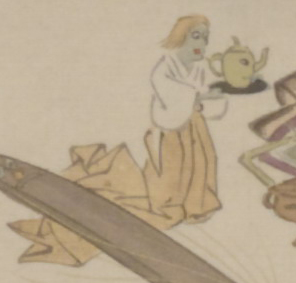

女と思われる化物。顔は青く、茶色の髪が首辺りまで伸びている。白い着物と茶色の裾長の袴をまとい、両手で掲げた盆にかね沸かしらしいものをのせている。かね沸かし状のものには目と口がついており、注ぎ口が鼻のようになっている。
著作者：靖々光一（山本光一）／出典：親書誌：U426_nichibunken_0098：滑稽百鬼夜行絵巻；コッケイヒャッキヤギョウエマキ／日付：2008／資源識別子：U426_nichibunken_0098_0002_0004
Copyright (c)2010- International Research Center for Japanese Studies, Kyoto, Japan. All rights reserved.